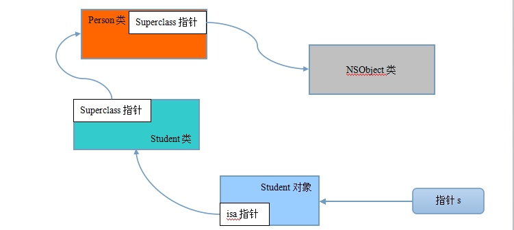

一、基本概念
程序的世界和人类的“对象”世界在思想上是没有设么区别的，富二代继承了父母，自然就拥有了父母拥有的所有资源，子类继承了父类同样就拥有了父类所有的方法和属性（成员变量）。

在这里动物是猫类和狗类的父类，黑猫和白猫类是猫类的子类。
继承的好处：
- 抽取出了重复的代码
- 建立了类和类之间的联系
继承的缺点: 耦合性太强
二、OC中的继承
@interface Animal:NSObject
//动物里继承了NSObject，获得NSObject类的方法；
@end
@interface Dog :Animal
//dog类继承Animal类
@end
注意：OC语言是单继承语言。在oc语言中，基本上所有类的根类都是NSObject类。
三、继承的使用注意
- 编译器从上往下执行，所以在子类前面至少应该要有父类的声明；
- OC中不允许子类和父类拥有相同名称的成员变量名；
- OC中的子类可以拥有和父类相同名称的方法，在子类调用时，优先去自己的内部寻找，如果没有则一层一层的往上找；
提示：重写即子类重新实现了父类中的某个方法，覆盖了父类以前的实现。
示意图：一共有三个类，Person类继承了NSObject类，Student类继承了Person类。

创建一个Student *s=[[Student alloc] init];
此时会把Student类和这个类的父类加载进内存。
提示：每个类中都有一个super class指针，该指针指向自己的父类。对象中有一个isa指针，该指针指向调用该对象的类。
四、继承和组合
继承的适用场合：
- 当两个类拥有相同的属性和方法时，就可以将相同的属性和方法抽取到一个父类中。
- 当A类完全拥有B类中的部分属性和方法时，可以考虑让B类继承A类（考虑），在这种情况下，也可以考虑使用组合。
继承：***是xxx,如狗是动物，可以让狗继承动物类
组合：***拥有xxx，如学生有书，可以让书这个类作为学生类的属性
五、关键字super
Super关键字，在子类中重写方法时，可以让调用者跳过这一层而调用父类中的方法。
作用：
- 直接调用父类中的某一个方法
- Super处在对象方法中，那么就会调用父类的对象方法；super处于类方法中，那么就会调用父类的类方法。
使用场景：子类在重写父类方法时，想要保留父类的一些行为。